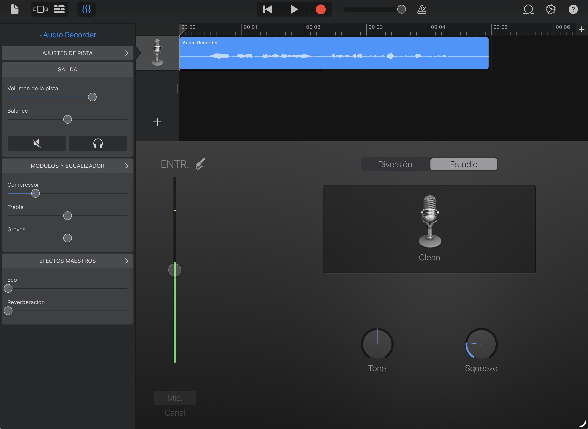
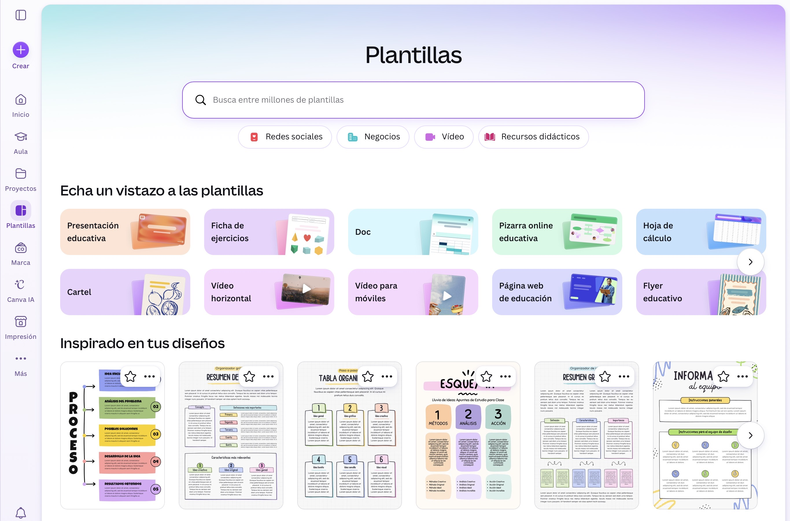

Montamos nuestro propio estudio de grabación: GarageBand y Canva
Este proyecto está pensado para cualquier curso de Enseñanzas Profesionales de Música, con el objetivo de desarrollar la grabación y presentación de contenidos musicales elaborados por el propio alumnado. El uso de las herramientas GarageBand y Canva presenta versatilidad y facilidad de uso, además de poder ser instaladas en los dispositivos que posee el alumnado con facilidad.
Por un lado, GarageBand permite realizar grabaciones de audio de calidad de manera intuitiva, favoreciendo que el alumnado pueda centrarse en aspectos interpretativos y de escucha crítica de su propia ejecución instrumental. Además, su interfaz visual y sencilla resulta adecuada para estudiantes que ya poseen una competencia digital media y están habituados al uso de dispositivos tecnológicos en contextos educativos y personales.

Por otro lado, Canva complementa la actividad desde una perspectiva visual y organizativa. El alumnado elaborará una infografía con las instrucciones necesarias para realizar correctamente la grabación de audio, fomentando así la síntesis de información, la organización de contenidos y la creatividad digital. Asimismo, la grabación obtenida servirá como base para diseñar un cartel o portada visual que acompañe al contenido sonoro generado por cada estudiante. Todas estas acciones deberán realizarse bajo el entorno seguro de la cuenta corporativa de Canva para educación. Así mismo, el contenido elaborado por el alumnado será subido a la plataforma Classroom, en la tarea correspondiente.

La propuesta se adapta al contexto y a las características del alumnado, ya que se trata de estudiantes de enseñanzas musicales profesionales con capacidad para trabajar de forma autónoma y reflexiva. A través de este proyecto no solo se trabajan competencias musicales relacionadas con la interpretación y la autoevaluación, sino también aspectos vinculados a la competencia digital docente y del alumnado, como la creación de contenidos digitales, el tratamiento de archivos multimedia y la comunicación visual.
En definitiva, el uso combinado de GarageBand y Canva permitirán desarrollar una actividad motivadora, práctica y cercana a los intereses del alumnado, integrando herramientas digitales accesibles y funcionales dentro del proceso de enseñanza-aprendizaje instrumental.